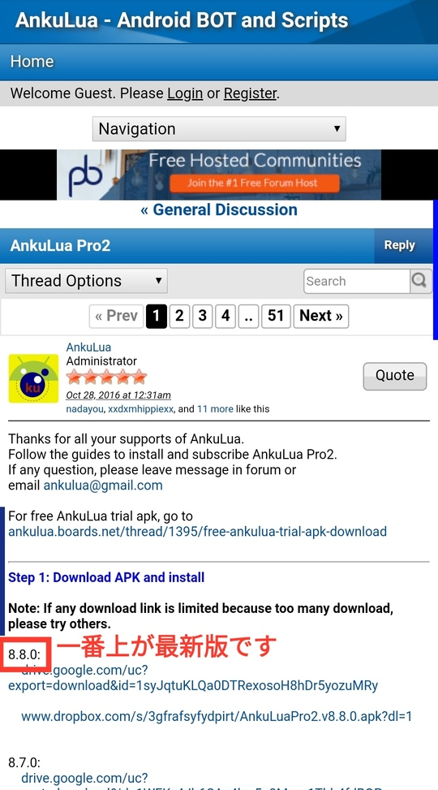
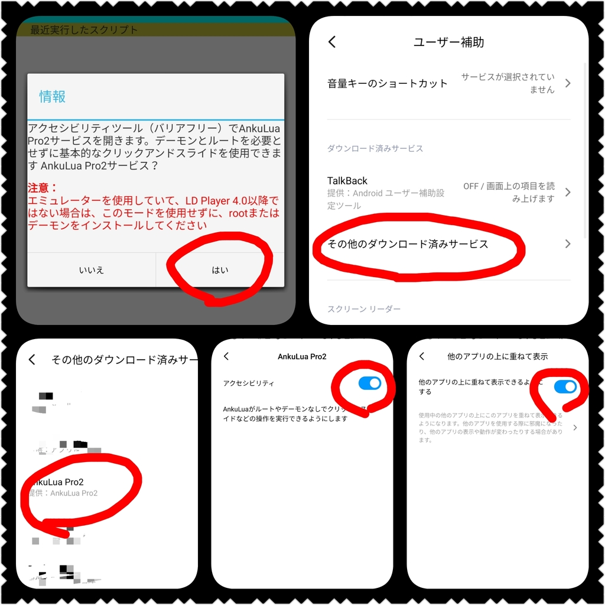
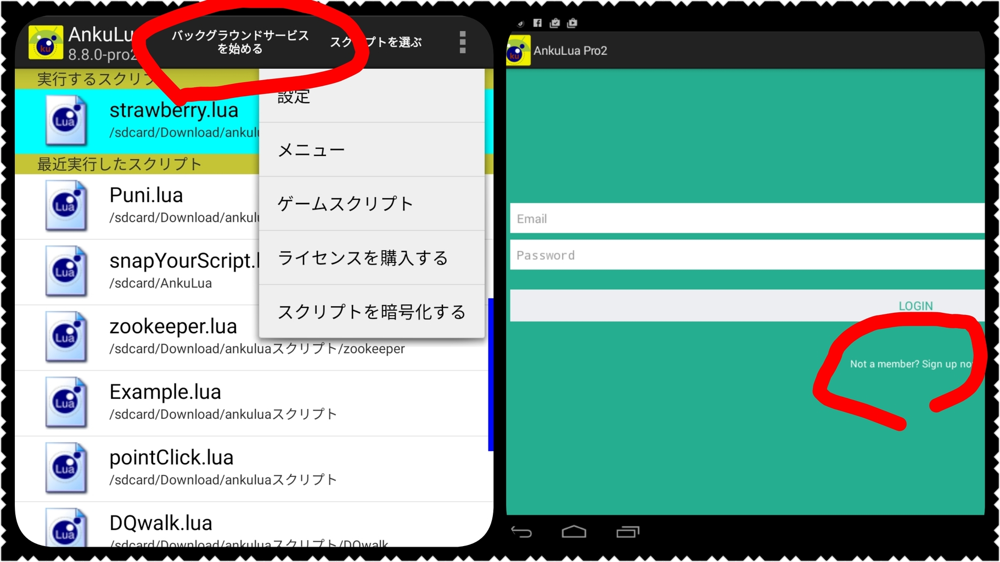
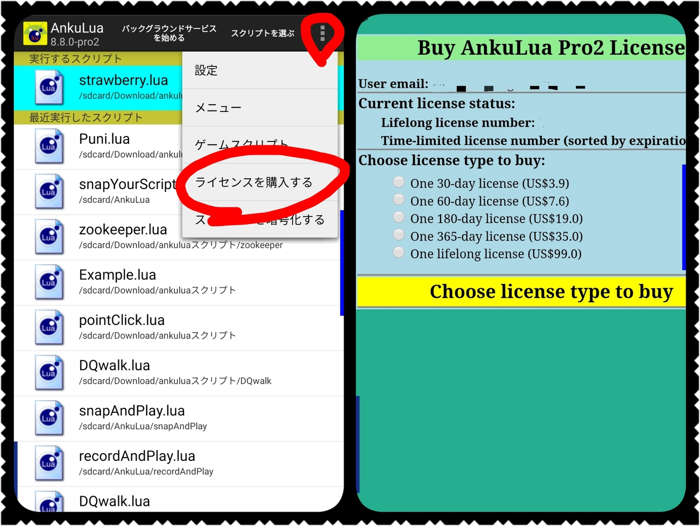

Ankuluaの導入方法
前提
これから紹介するのは、Ankuluaのユーザ登録〜ライセンス購入までの手順です。当方の環境は、Xiaomi MIUIです。参考になるかもしれませんが、まったくならないかもしれません。スクリプトの購入を考えていらっしゃる方からのご質問は大歓迎です。お気軽にメールにてご質問下さい、可能な範囲でお答えします。
- 当方のデバイスはunlock済みです。root化までは行っていません。
- Ankuluaのライセンスを購入するのにおそらくクレカが必要です。
apkダウンロード
Ankuluaの最新apkを
https://ankulua.boards.net/thread/204/ankulua-pro2
からダウンロードして、インストールします。

権限の設定
Ankuluaを起動すると、必要ないくつかの権限が要求されます。設定画面に飛ばされるので、必要な権限を設定してから戻ります。以前は、PCとUSBで接続して面倒な設定があったのですが、今はそのような手順を踏む必要はありません。

ログイン画面
権限の設定を正しく終えたら、画面上部の『バックグラウンドサービスを始める』をタップします。するとankuluaのユーザログイン画面にとばされるので、ログインではなく新規ユーザ登録を行います。

ライセンス購入
ユーザ登録を終えたら、画面右上から『ライセンス購入』を選びます。まずは一番安い30日間のライセンスでもよいでしょう。そして右下の『paypal』から支払いに進みます。おそらくクレカで支払いができるはずです。これでライセンス購入は完了です。

お問い合わせ先はこちら
メールアドレスは以下です。
ドットを"."に、アットを"@"に置き換えて下さい。48時間以内に返答致します。
rktnドットbooアットgmail.com